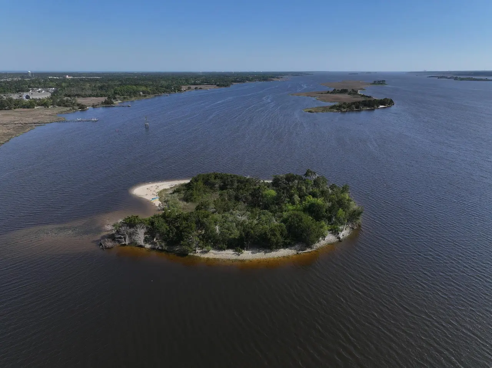
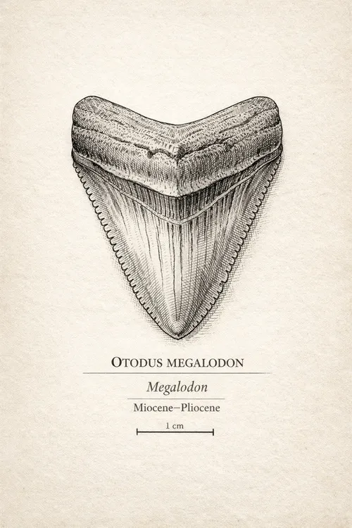
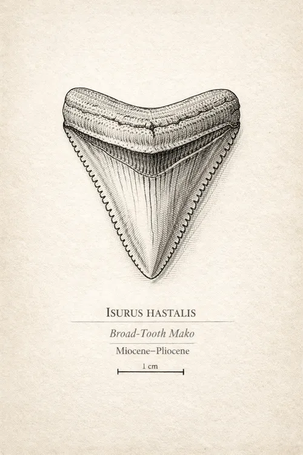
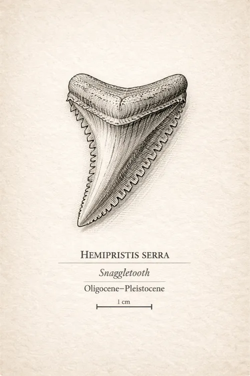
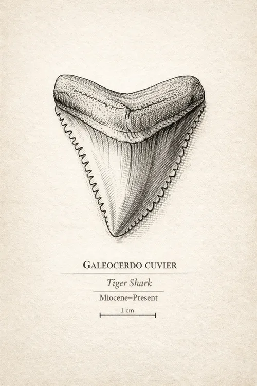

Depth of Time.
Scroll from today's river back through 45 million years. Time is to scale, one pixel for every 10,000 years, except at three marked breaks that skip stretches with no events listed. At the bottom, see how all of it ended up on one shoreline.
This is a timeline, not a drill core. It measures time, not feet. The real beds here are thin or missing in places.
Today
Holocene

Today · Holocene
You start here.
River sand, oyster shell, and modern wash. The Holocene is the last 11,700 years. At this scale, that's the thin orange line under this photo, about one pixel tall.
2.58 million to 11,700 years ago
Pleistocene
Ice ages and swinging sea levels. Most sharks now look like today's. Teeth are often lighter and less mineralized.
Teeth: great white, tiger, bull.
5.33 to 2.58 million years ago
Pliocene
Cooler seas and a turnover in sharks. Great whites spread out of the Pacific around 4 million years ago. Megalodon is gone by about 3.6 million.
Teeth: last megalodon, great white, broad-tooth mako, snaggletooth.
23 to 5.33 million years ago
Miocene
Warm, shallow seas cover much of what is now the Atlantic coastal plain. This is the big one for the teeth people come looking for.
The channel study we cite names no Miocene bed along the river. We place these teeth here by their species.

Megalodon
Broad-tooth mako
Snaggletooth
Tiger
About 11.6 million years ago
The middle Miocene ends.
About 14.5 million years ago
At Maryland's Calvert Cliffs, about a third of megatooth teeth still have side cusps, down from about 87% between 20 and 17 million years ago. By 7.6 million years ago, none do.
3 million years skipped
In the record: megalodon, broad-tooth mako, snaggletooth
About 20 million years ago
The broad-tooth mako enters the record. Many paleontologists now see it as the great white's ancestor.
About 23 million years ago
Megalodon's commonly given start. Scientists can't pinpoint it, because the change from its ancestor was so gradual.
33.9 to 23 million years ago
Oligocene
It opens with a major global cooling, as ice sheets in Antarctica reach the sea. Most of the teeth in this guide haven't appeared yet. Even with a break cut out, this is a lot of time.
Middle Oligocene
The River Bend Formation. This is one of three rock units the Wilmington ship channel is cut into.
3.5 million years skipped
In the record: older tiger shark species
About 33 million years ago
Otodus angustidens, an earlier megatooth with side cusps, appears. Dates vary by source.
Back to 45 million years ago
Eocene
A warmer world, before the Oligocene cooling. The tiger shark genus is already here. Its record goes back about 56 million years, though today's species is far younger.
3.6 million years skipped
In the record: older tiger shark species
About 38 to 50 million years ago
The Castle Hayne Limestone, with its type area at the Castle Hayne quarries. The channel cuts into it too, and shark and ray teeth are the most common fossils in its lowest member.
The scroll stops here
Deeper still is the Cretaceous Peedee Formation, more than 66 million years old, and the channel reaches that as well. Showing it would take another 2,100 pixels.
Then a dredge mixed it up.
At full scale, that scroll is 4,500 pixels. The channel's whole history would fill 0.015 of one. Keep going to watch what that sliver of time did.
Step 1 of 3 · Diagram
Before the channel
Drawn here as tidy layers, oldest at the bottom. The real ground along the river is patchier than this.
Step 2 of 3 · 1870 on
The dredging starts
Federal work on the lower Cape Fear began in 1870, and the U.S. Army Corps of Engineers dredged a 12-foot channel to Wilmington between 1874 and 1876. Later projects went deeper, into Eocene, Oligocene, and Cretaceous rock.
Step 3 of 3 · Today
The spoil goes nearby
Dredged material was placed along the channel and built spoil islands. Shark Tooth Island looks like one of the newer ones: a 1966 nautical chart shows water here, and aerial photos from April 1969 show the island. Near it, the channel is cut into Castle Hayne limestone, so rock tens of millions of years old ends up beside much younger shell and sand.
Where does your tooth belong?
Pick the shark. A species gives you a range of time, not an exact date.
Sources
- Channel rock units: Harris and Haw, Geological Society of America abstract, 2001
- Rock in the harbor and limestone in dredged material: U.S. Army Corps of Engineers, Wilmington Harbor report, 2018, p. 8
- Castle Hayne age: Hazel and others, GSA Bulletin, 1984
- River Bend Formation: USGS Geolex
- When the island formed: USGS topographic maps (1948; 1970 map from April 1969 photos) and NOAA nautical chart 426 (1966)
- River work from 1870: Sprunt, Chronicles of the Cape Fear River, 1916, and the Annual Reports of the Chief of Engineers, 1870 to 1876
- Megalodon's end: Boessenecker and others, PeerJ, 2019
- Megalodon's dates and tooth changes: Florida Museum
- Broad-tooth mako: Florida Museum
- Tiger sharks: Türtscher and others, Paleobiology, 2021
- Bull shark: Florida Museum, Montbrook site
- Epoch dates: geologic time scale. Oligocene cooling: Wikipedia